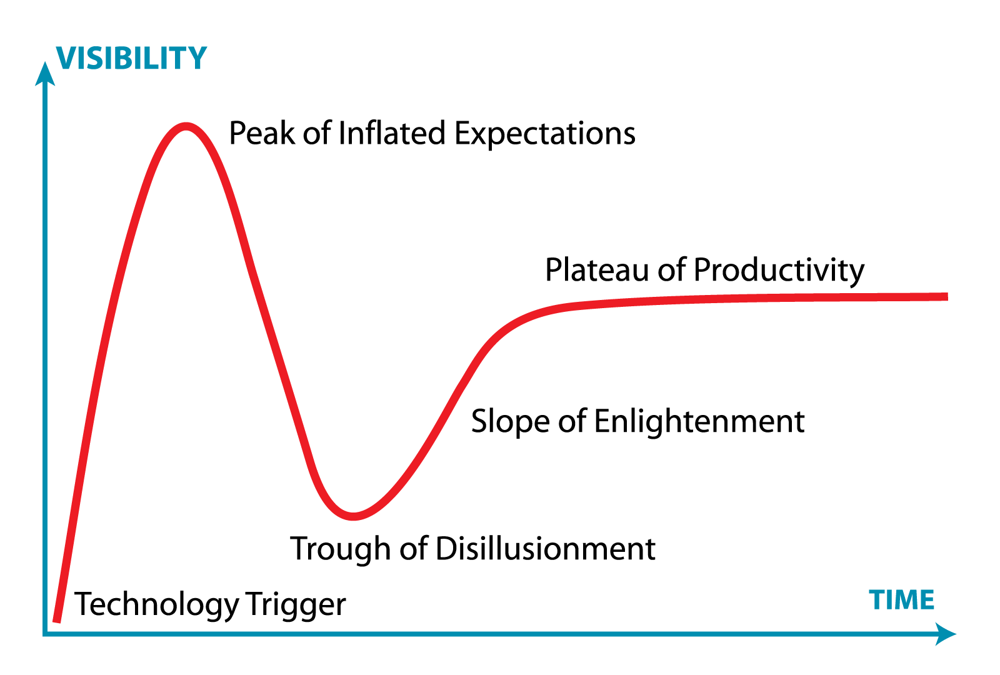
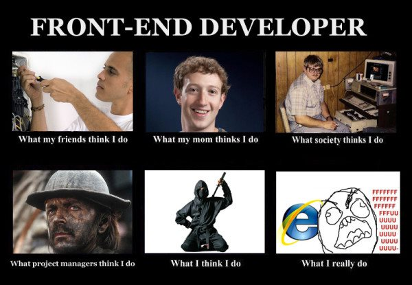

Comment assurer la scalabilité et la sécurité des APIs
Comment assurer la
scalabilité et la
sécurité des
API ?
Why APIs?
Websites are done for humans
APIs are built for computer (and developers)
APIs usage in real world
- Products extensions (OVH, Twitter, Google...)
- Administrate technology (Openstack, μservice...)

Low level protocols
First API stay on the same machine
void init_timer( struct timer_list *timer );
void setup_timer( struct timer_list *timer,
void (*function)(unsigned long), unsigned long data );
Then developers create sockets
RPC
- Need a common interface
- Hide network level
- Know usage: NFS
SOAP
- Use XML to validate the data
- Can use HTTP to communicate
REST
- The reign of HTTP
- JSON <3 JS
- Stateless
- An hipster technology?
Will be replace by graphQL?
Reuse HTTP protocol
- URL to design a resource
- Verb to define the action
- Headers to add metadata
- Body to send and receive data
- Response code
Example
$ curl 'http://api.rondcoin.ovh/api/offer'
{
"current_page": 1,
"data": [
{
"created_at": "2016-12-13 21:34:41",
"id": 7,
"photo": "xR4uaH7YDs91LwtRDl2rdRQZgQJ75S.jpg",
"price": "12.00",
"text": "A conference at the netsecure-day from Rouen",
"title": "Securize an API",
"updated_at": "2016-12-13 21:34:41",
"user": 10
}
],
"from": 1,
"last_page": 1,
"next_page_url": null,
"per_page": 10,
"prev_page_url": null,
"to": 1,
"total": 1
}
Can you securize it like a website?
Réponse de Normand
D'après l'Allemand Walter Gottschalk, dans son ouvrage
sur la langue française publié en 1930, cela viendrait d'une
ancienne loi normande qui permettait à quelqu'un ayant signé
un marché, de s'en dédire dans les 24 heures. D'où le proverbe
"un Normand a son dit et son dédit".
Expressio.fr
YES ! Securize your API like a website
Who is backend developer here?

Frontend security
- Avoid CSRF attacks
- Escape your data return to avoid XSS
- Use good response code
- Enable CORS
NO ! Don't securize like a website!
Authentication mode
- Use cookie and session? not stateless!
- Use HTTP authentication
- Use temporary token
Authentication by token
- Fastest: store token in cache
- Don't exchange user:pass everytime
- Multiple tokens by user account / limited perimter
- Can disable it if compromised
Authentication by token : examples
- Oauth2 (Facebook, Google, Twitter...)
- Openstack
- JWT
API Availability
- You can't
- Push an html version on a CDN
- Have a long downtime
- Show a maintenance page
Improve the availability
- Avoid to send all your db: Paginate!
- Create job to asynchronize long action
- Optimize your code
Other issues with API
- HTTP headers can be change by hackers. Sanitize it!
- Always check account isolation
- Use UUID instead of ID
- Avoid replay attack
Comment assurer la
scalabilité et la
sécurité des
API ?
Thanks you